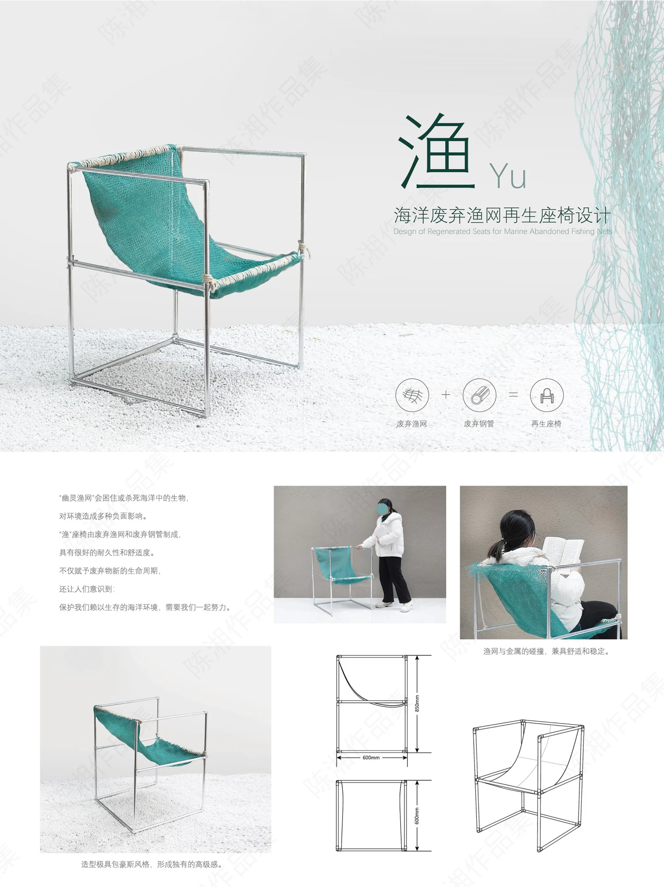

PROJECT 09 / YU / REGENERATED CHAIR
渔 · 废弃渔网再生座椅
用废弃渔网与钢管，探索材料再生与日常家具的连接。

从海洋废弃物出发
关注废弃渔网对海洋环境的影响，以材料再利用的方式提出家具设计方向。
渔网与金属骨架
方案将废弃渔网与钢管组合，通过纤细的金属结构与网面形成座椅的支撑和使用面。
使用与结构表达
展板包含座椅效果、人体使用场景与尺寸结构图，呈现材料关系和造型。再生价值按设计意图描述，不虚构材料测试或环境收益数据。
PROCESS / 设计过程与展板
CLICK TO VIEW FULL SIZE以下为作品集中记录的设计方案与过程。图片可点击放大查看，保留原稿内容与水印。

内容来源：《陈湘作品集（展板）》第 5 页中间。未明确的项目时间、个人分工及落地结果未作推断。